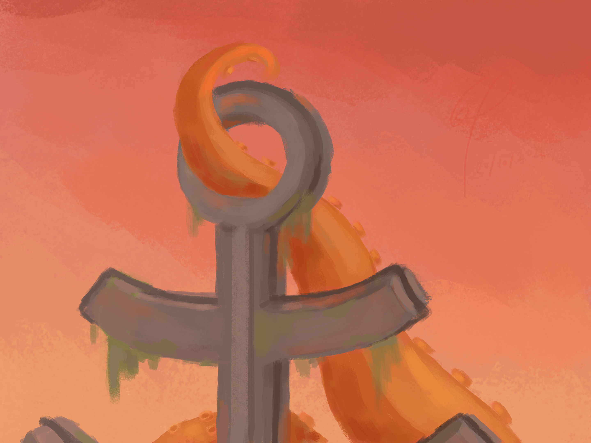
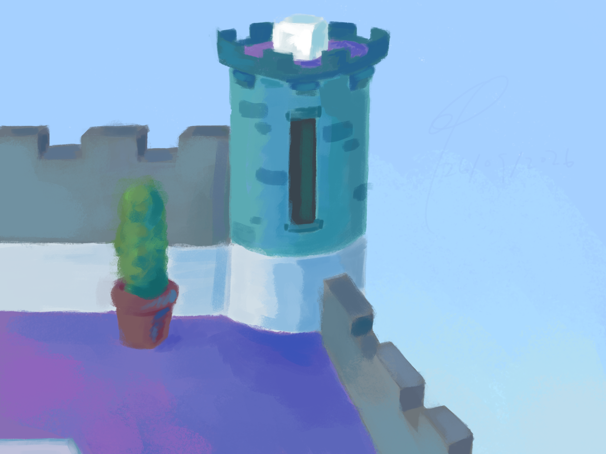
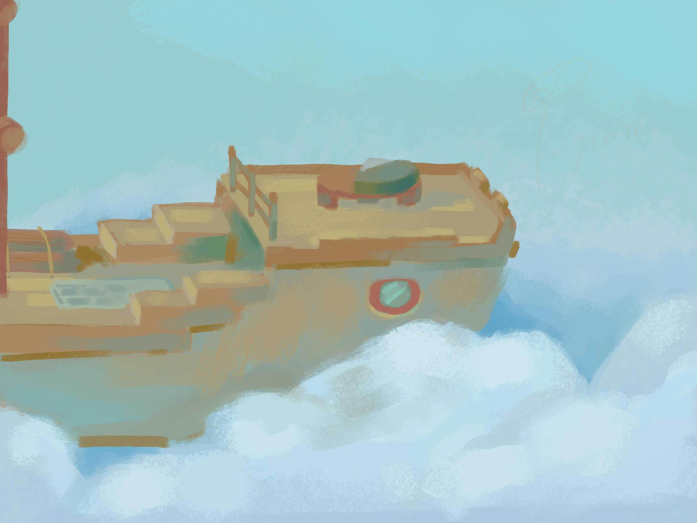
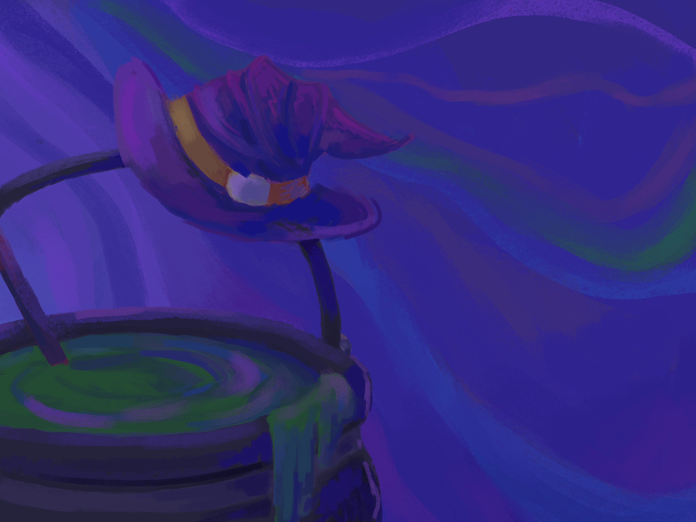
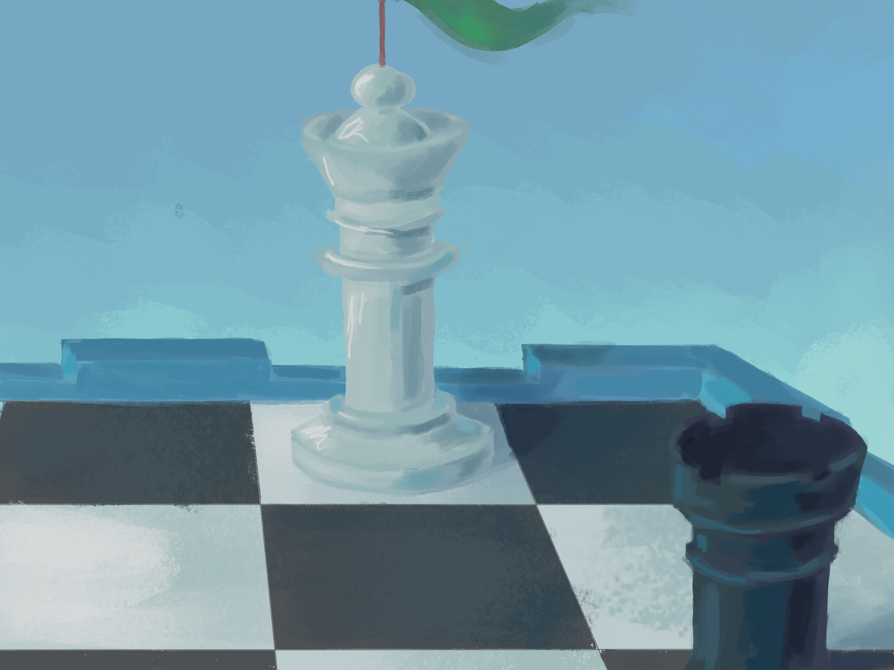

About this page
Welcome to the Maps directory. This page serves as a comprehensive guide to all battlegrounds available in the game. Here you will find detailed overviews of layouts, strategic chokepoints, and environmental hazards to help you master the terrain[cite: 1].
Select a Map

Anchored

Armada

Battlement

Bombardment

Cauldron

Chessboard
Anchored
Overview: Welcome to Anchored. Master the layout, utilize strategic chokepoints, and navigate environmental hazards carefully[cite: 1].